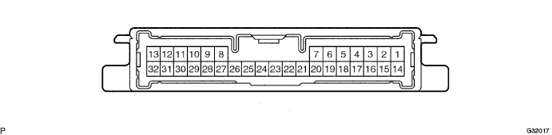
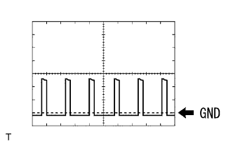

Active Torque Control 4WD System Terminals of ECU |

| Terminal Symbol [Terminal No.] | Input/Output | Item | Measurement Condition | Standard |
|---|---|---|---|---|
| 4WDS ←→ GND [2 ←→ 23] (4WD select switch input) | Input | Voltage | 4 wheel drive control switch OFF → ON | 11 to 14V → 1V or less |
| BSLC ←→ GND [9 ←→ 23] (4WD linear solenoid power supply input) | Input | Voltage | Always | 11 to 14V |
| IG1 ←→ GND [11 ←→ 23] (4WD computer assembly power supply input) | Input | Voltage | IG ON | 11 to 14V |
| SLC+ ←→ SLC- [13 ←→ 32] (Linear solenoid SLC output) | Output | Waveform | IG ON D position Idling | Waveform 1 |
| CANH ←→ CANL [14 ←→ 16] (CAN communication) | - | Resistance | IG OFF | 54 to 69Ω |
| SSLC ←→ Body ground [31] | - | Resistance | Always | 1 Ω or less |
| GND ←→ Body ground [23] | - | Resistance | Always | 1 Ω or less |
 |
Waveform1(SLC)
| Item | Description |
|---|---|
| Measurement Terminal | SLC+←→SLC- |
| Tool Setting | 5V/DIV、2ms/DIV |
| Measurement Condition | IG ON D position Idling |